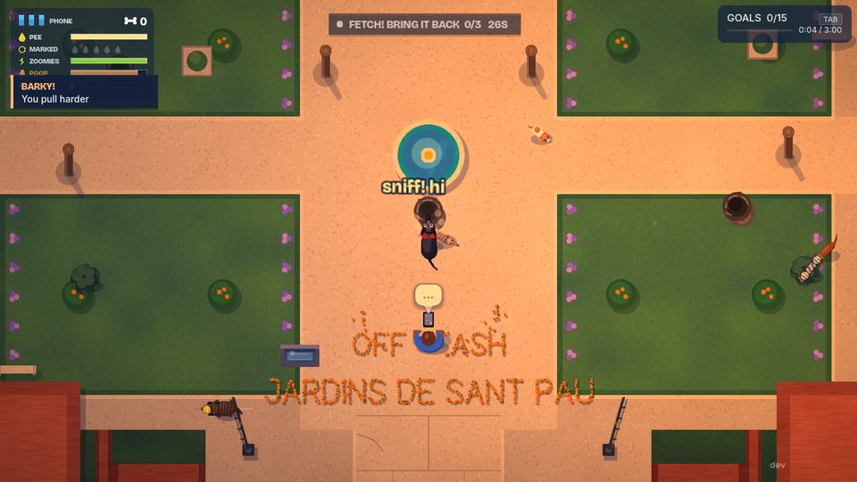

Sant Pau
The modernista hospital gardens
Dusk through Domènech i Montaner's modernista hospital complex in El Guinardó: brick pavilions topped with glazed ceramic domes, orange-tree avenues, fragrant purple lavender beds and the tall bell tower chiming across Jardins de Sant Pau.
- Off-leash stop
- JARDINS DE SANT PAU (Fenced dog yard)
- Beat the clock
- Under 3:00
Screenshots



Goals (15)
- Mark 5 spots
- Have 4 good long sniffs
- Get the phone home without a scratch
- Get yourself home without a bump
- Get your business bagged
- Bring the ball back 3 times
- Have a good long drink
- Bark hello to the school tour group
- Howl along with the clock tower's chime
- Dash through 3 lavender beds
- Land an x3 trick combo
- Pinch the candied orange off the garden bench
- Spell LEASH
- Find the hidden pernil
- Beat the clock (under 3:00)